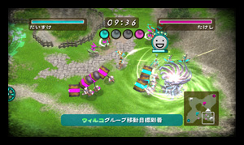
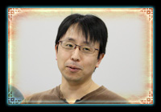

| ―― | 先ほどから何度か話題に挙がっている「Wi-Fi」ですが、ここをプレイヤーにとっての最終的な到達点として考えられているのでしょうか。 |  |
| 井上： | 製品の企画段階から、ストーリーモードで身に付けた魔法の腕前をWi-Fiでお披露目してもらいたいと考えていました。 | |
| 吉良： | Wi-Fiには1週間ごとのランキングと、一定期間ごとのランキングがあって、そこのポイント上位を目指してもらうようになっているんです。 |
| ―― | 対戦と協力の２種類があるとのことですが、このふたつのモードそれぞれのポイントをお聞かせください。 |
| 瀬口： | 当初は予定のなかった「協力プレイを入れてほしい」と言われたときは「協力ってどういうこと？」って驚きました（笑）。 |  |
| 芳賀： | やはり対戦ばかりだと殺伐としてしまいますし、どうしても上手い人がたくさんいる中に新しい人が入りづらくなってしまうので、まずは協力プレイで他の人と一緒に遊ぶ楽しさを知ってもらって、その先で対戦に挑戦してもらいたいと考えています。 |
| 井上： | 上手な人はサポートにまわってもらって、皆さんに楽しんでいただきたいですね。ポイントも手に入るので、ランキングにも意味はありますし。初心者や中級者の方も、上手い人と戦って負けて学ぶことは多いと思うので、積極的にWi-Fiに繋げてほしいです。我々も予想していなかったような、新しい魔法の使い方や、面白い戦略が出てくるのを期待しています。 |
| ―― | シナリオに詰まったときにWi-Fiをやってみるのも良さそうですね。 |
| 井上： | 他にも、WiiConnect24を使って、ゲームのリプレイ動画を交換できるようになっています。クリアができないステージの攻略法を教えあったり、伝えたいプレイを実物で共有できるので、これもぜひ使ってみてほしいです。 |
| ―― | そして、対戦にチャレンジしていくと。他のモードとの差別化で意識されたところはありますか？ |
| 井上： | 短い時間で緊迫した戦いを何回も手軽に遊べるというようになっています。あとは、自分のデルゲートがあって、モンスターがそこから何度でも登場するというのがポイントですね。 |
| 吉良： | タイトーさんとのコラボレーションということで、Wi-Fiのステージにお互いの有名キャラクターをモチーフにした「侵略の間」と「兄の間」というステージも用意しています。 | |
| 芳賀： | 「兄の間」は、最初から３つずつマナゲートを占領してあって全部の魔法が使える状態で始まるステージで社内では人気が高いです。 | |
| ―― | オーヴィルの兄・ウィルバーではなく、ヒゲのある方の“兄”なんですね（笑）。 |
| 井上： | そうですね（笑）。「ヨーイ、ドン！」でいきなり最強の魔法が飛び出してくるような、何が起こるかわからないステージになっています。 |